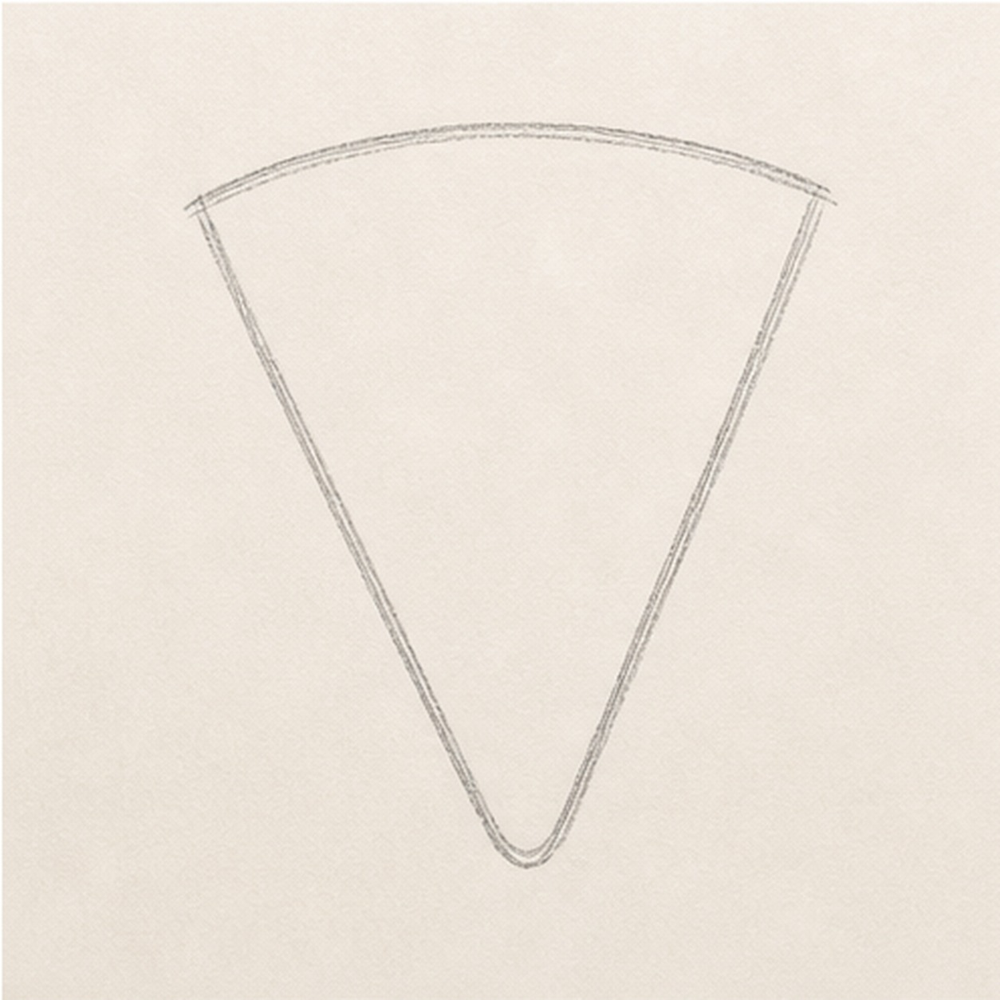
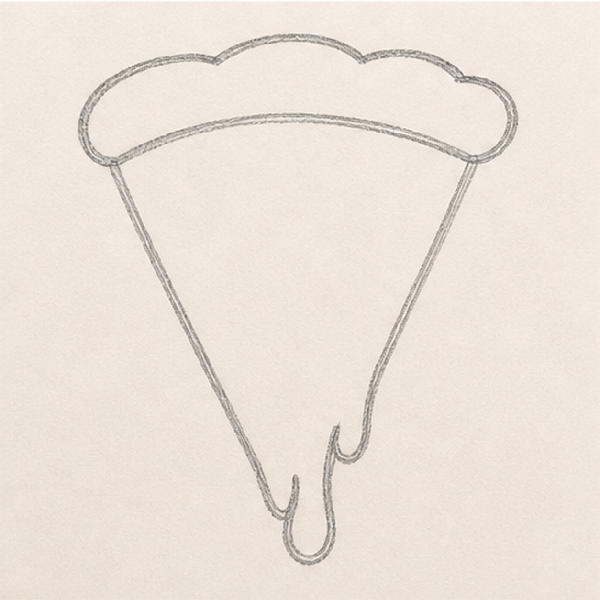
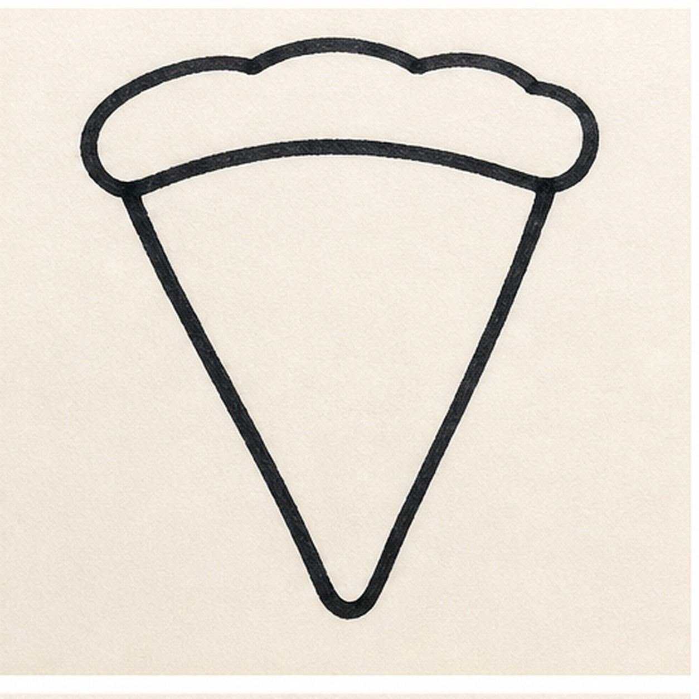
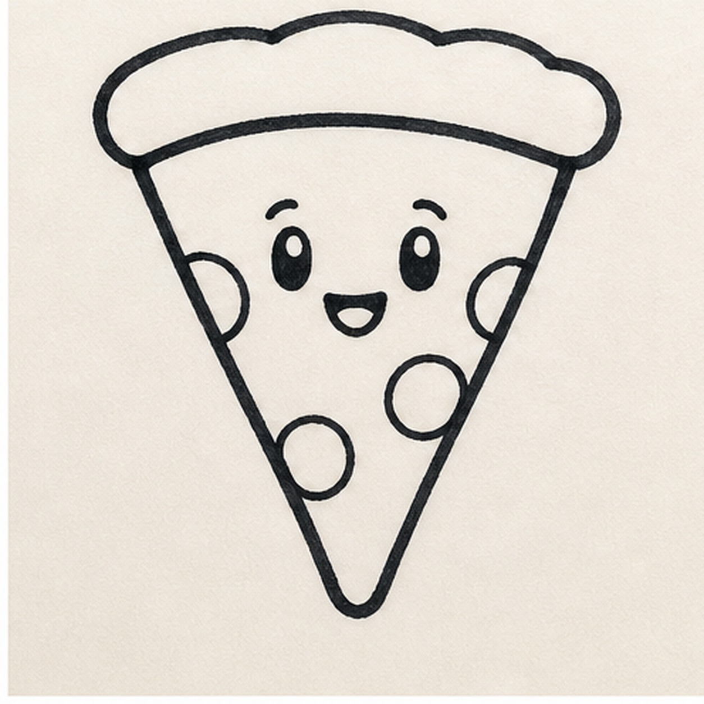
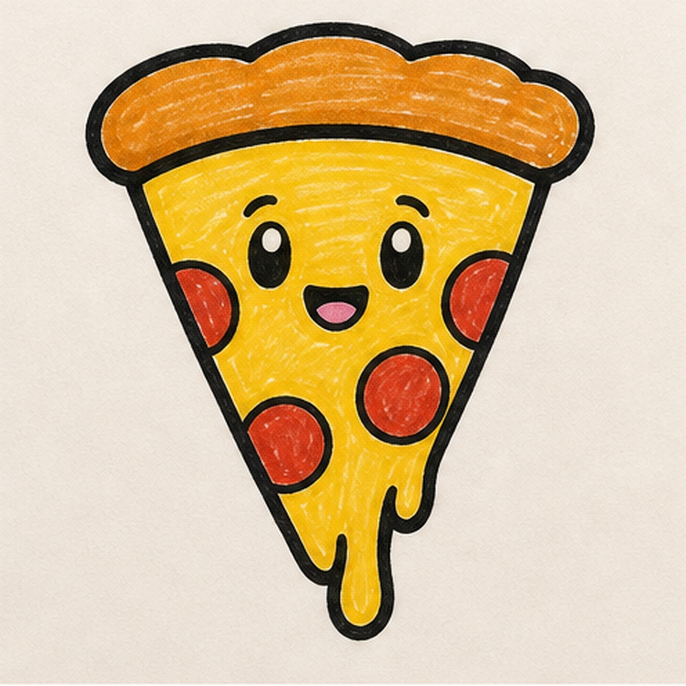

Felt-tip marker mode
Let's doodle a pizza slice
Use loose curves first, then switch to confident marker outlines and bright fills.
-
01

Start the slice shape
Draw a wide triangle that points down. Round the lower point slightly so the slice feels soft instead of sharp.
Doodle tip: Make the top edge wider than you think. The crust needs room to sit on it.
-
02

Round the crust and drip
Add a puffy band across the top of the triangle, then sketch one small cheese stretch hanging from the lower edge.
Doodle tip: Put the drip in before the marker outline. Later steps should only strengthen shapes you already planned.
-
03

Thicken the outline
Trace the triangle sides, lower point, cheese stretch, and crust with a bold black marker line.
Doodle tip: Move slowly around the crust bumps and drip. The handmade wobble is good, but every dark line should follow an existing contour.
-
04

Add the face and toppings
Draw two simple eyes, a small smile, and a few round pepperoni circles around the face.
Doodle tip: Leave breathing room around the eyes. If a pepperoni touches the face, the expression gets harder to read.
-
05

Fill the marker color
Fill the cheese and cheese stretch yellow, color the crust orange-brown, and fill the pepperoni red.
Doodle tip: Color with short strokes in one direction. The streaks make the doodle feel marker-made.
-
06
Crisp the slice edges
Retrace the crust, drip, face, and pepperoni edges, then deepen the yellow, orange, and red marker fills you already placed.
Doodle tip: Skip extra toppings here. This step should make the pizza look warmer and cleaner, not change the recipe.